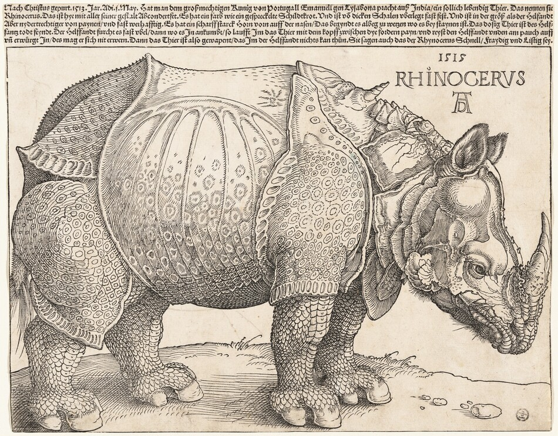

Overview
Why is arts participation so important? What is this study about? What is the argument being made?

[introduction paragraph + overview]
Research Questions
As the first part of the study, we thought to explore questions to answer how sociodemographics affect arts participation and what that means.
We managed to narrow the different key areas into a few research questions that will be answered throughout this project. They are listed below.